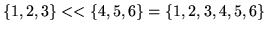

class array
{
public:
int size;
void *list;
array (int s=0);
array ( array & x);
~ array ();
array operator=( array x);
operator double *();
array operator=( double * x);
/* unary minus */
array operator-();
/* binary arithmetic operators */
array operator + ( array x);
array operator - ( array x);
array operator * ( array x);
array operator / ( array x);
/* binary comparison operators */
iarray operator < ( array x);
iarray operator <= ( array x);
iarray operator > ( array x);
iarray operator >= ( array x);
iarray operator == ( array x);
iarray operator != ( array x);
/* concatenation */
array operator << ( array x);
/* broadcast arithmetic ops - commutative equivalents defined
elsewhere */
array operator + ( double x);
array operator - ( double x);
array operator * ( double x);
array operator / ( double x);
/* broadcast comparison ops - commutative equivalents defined
elsewhere */
iarray operator < ( double x);
iarray operator <= ( double x);
iarray operator > ( double x);
iarray operator >= ( double x);
iarray operator == ( double x);
iarray operator != ( double x);
/* concatenate an element - commutative equivalents defined
elsewhere */
array operator << ( double x);
/* compound assignment */
array operator += ( array x);
array operator += ( double x); /* broadcast add to */
array operator -= ( array x);
array operator -= ( double x);
array operator *= ( array x);
array operator *= ( double x);
array operator /= ( array x);
array operator /= ( double x);
array operator <<= ( array x); /* compound concatenation */
array operator <<= ( double x);
/* index operations */
#ifdef CONTIGUOUS
double& operator[](int);
#else
par_addr_double operator[](int);
#endif
par_addr_array operator[](iarray); /* gather/scatter ops */
/* all of the previous routines have been defined for the iarray class
as well, with every occurance of array being replace by iarray, and
every occurance of double being replaced by int */
/* multiply an array by an iarray */
inline array operator*(iarray);
/* broadcast an integer to an array */
array operator=(int x);
/* probabilistically round an array to an iarray. See rounding below */
operator iarray();
};
class iarray
{
public:
/* all the previous methods defined for array ar also defined
equivalently for iarray */
/* extra iarray methods */
/* boolean operators */
iarray operator ! ();
iarray operator && (iarray x);
iarray operator || (iarray x);
iarray operator&=(iarray x) {return *this = *this && x;}
iarray operator|=(iarray x) {return *this = *this || x;}
/* probabilistic assignment - see rounding below */
void operator=(array x);
void operator+=(array x);
/* convert to array */
inline operator array();
}
The implementation of the data storage is pointed to by
list. More than one array variable may have the same
list pointer, so that assignment does not involve copying of
the data, just copying the list pointer. This allows arrays to be
passed by value efficiently in the C++ code. In the case where list points to a contiguous memory location where the data is
stored, defining CONTIGUOUS allows obvious optimisations for
index operations.
iarray is the integer version of array. Binary operations +,*,= etc. have been defined elementwise, otherwise a scalar value may be broadcast over the whole array. The concatenation operation joins two arrays to make a larger array, e.g.

.